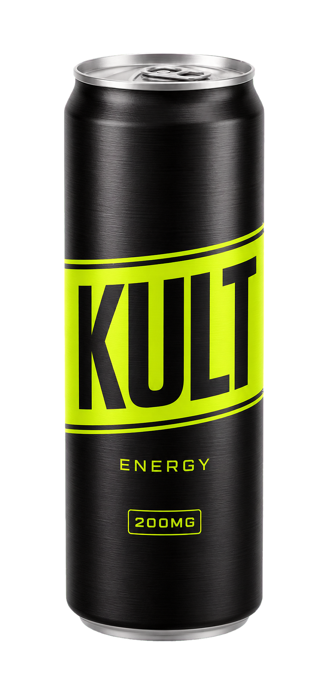
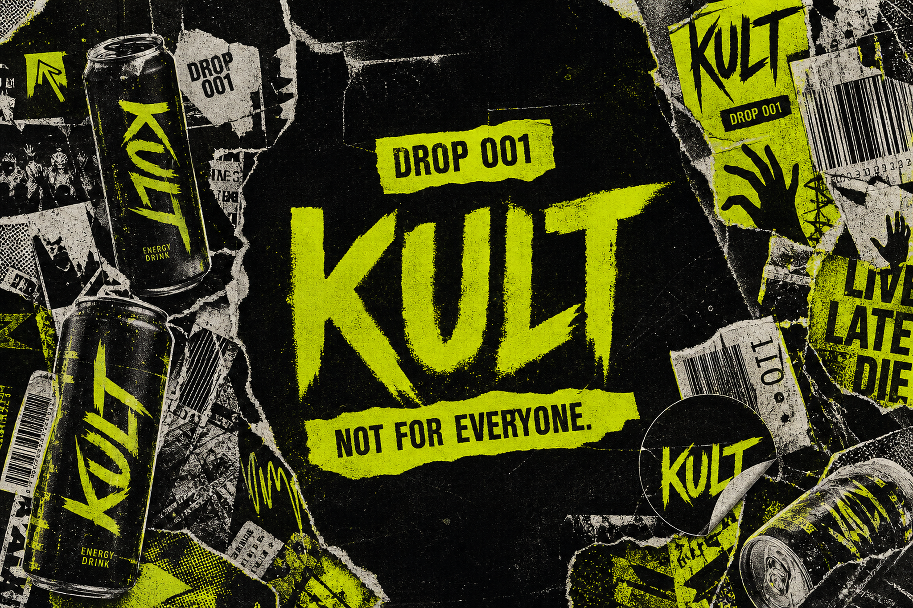
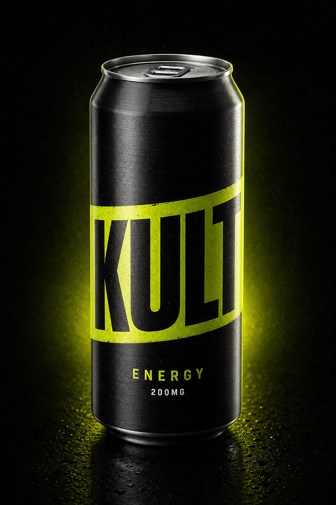
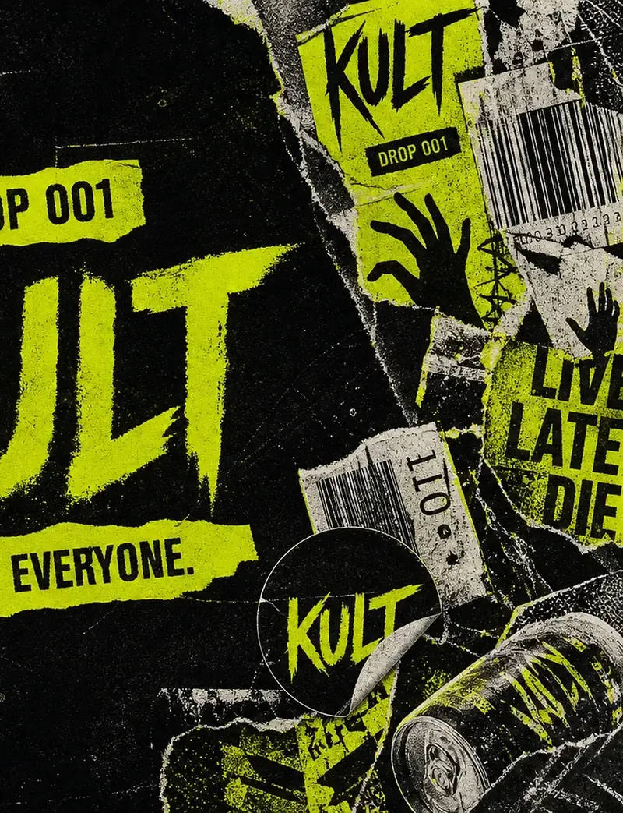
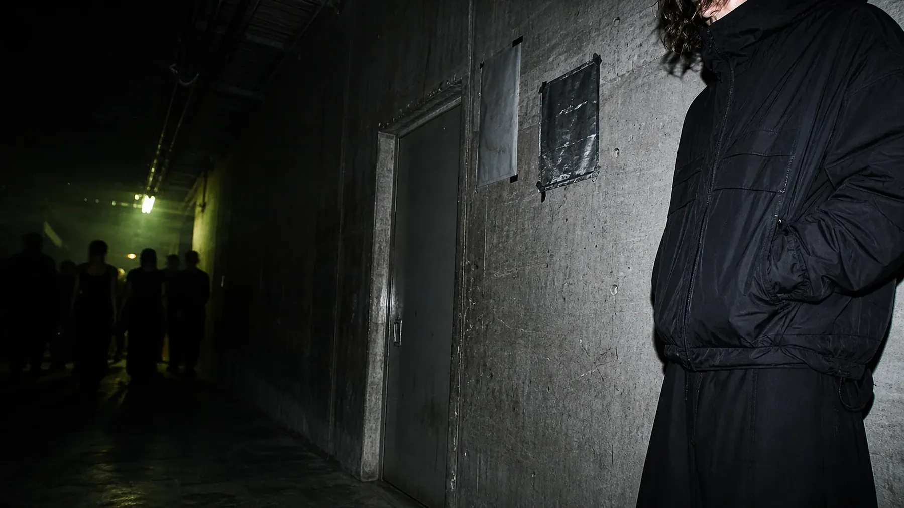
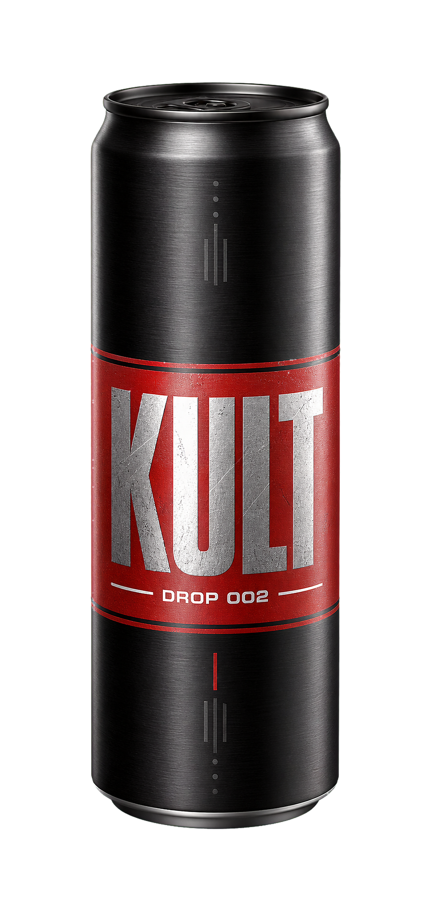

Black
Dry citrus / mineral finish
Finished Drop 001 directionDrop 001 brings a dry citrus bite, zero sugar and 200 mg caffeine into one uncompromising can.
Explore Drop 001


KULT is a fictional brand campaign. The can, identity and Drop 001 world are the finished design; commerce and customer proof are intentionally absent.
BLACK is the finished Drop 001 language. VOID and BURN are clearly marked campaign explorations, built to test how far the system can stretch.
Dry citrus / mineral finish
Finished Drop 001 directionCold berry / dry finish
Illustrative campaign directionBitter orange / pepper edge
Illustrative campaign directionThe campaign describes a product concept, not health or performance outcomes. No unsupported benefits are implied.
Drop 001 is positioned away from candy sweetness. The language is directional and conceptual, not a laboratory sensory claim.
Concept taste map / no consumer-test claim
The system is built for low light and fast recognition: one black mass, one acid band, one compressed wordmark and only the information the release needs.
The campaign expands through objects people can actually encounter. This is a design-deliverables map, not evidence of a real launch.


KULT borrows the visual pressure of pasted club bills, backstage corridors and black technical clothing. It is a designed campaign world—not borrowed community proof.
“The city is the media surface.”Campaign positioning line
A placement system built from scale, repetition and interruption. No fake venues or event partnerships are attached to the concept.
The visual language comes from overprint, toner drag, torn edges and hard crops. Effects stay tied to physical reproduction instead of generic digital noise.
A red-label packaging study that tests a harsher branch of the KULT system. Presented as a teaser concept, not a scheduled release.
Concept study / no release date
Future directions can change heat, color and pacing while three anchors remain fixed.
WORDMARKsame compressed ownershipLOCKED
BLACK MASSsame shelf-distance silhouetteLOCKED
DROP CODEnew number, new signal colorVARIABLE
The campaign does not promise focus, endurance, status or belonging. Any real product launch would require final formula verification, compliant labeling and market-specific safety information.
The strongest campaign world is still transparent about what exists and what does not.
No. KULT is a fictional identity, packaging and campaign project presented for portfolio review.
BLACK is the finished Drop 001 direction. VOID and BURN are clearly labeled visual and taste-positioning explorations.
No. It is a packaging study with no launch date, stock or availability claim.
No. Any real release would require formulation, testing, legal review and final compliant labeling.
Try the signup interaction in this local portfolio preview. No email is stored or sent.